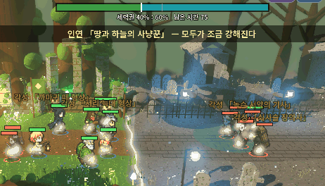
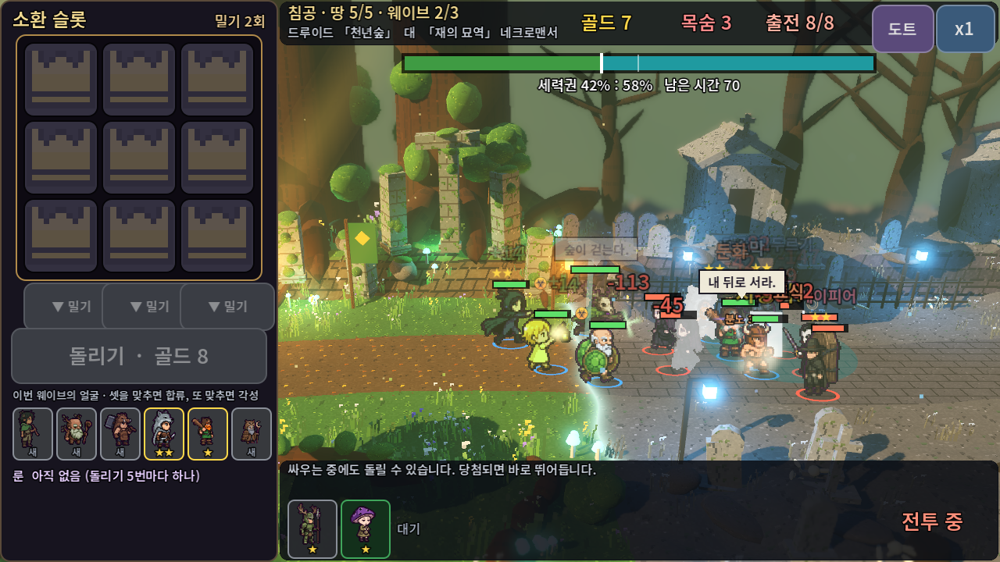
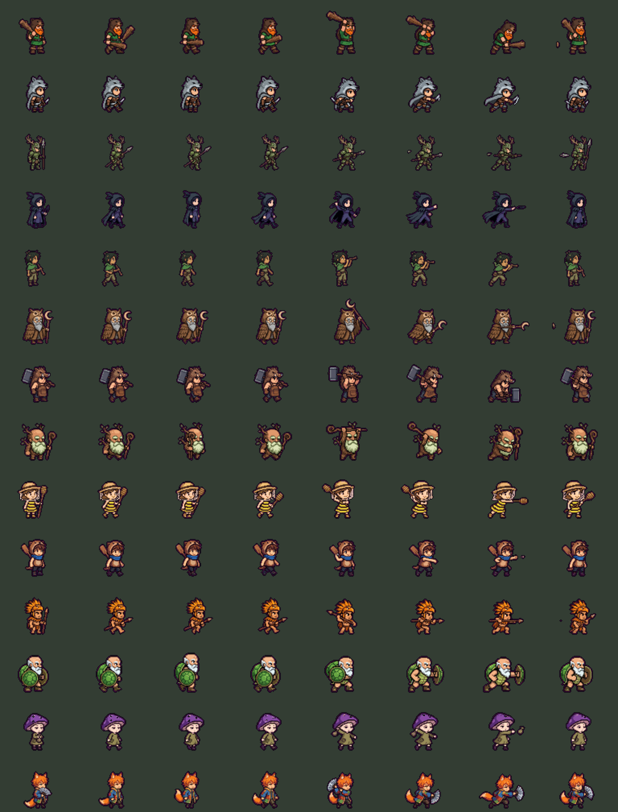
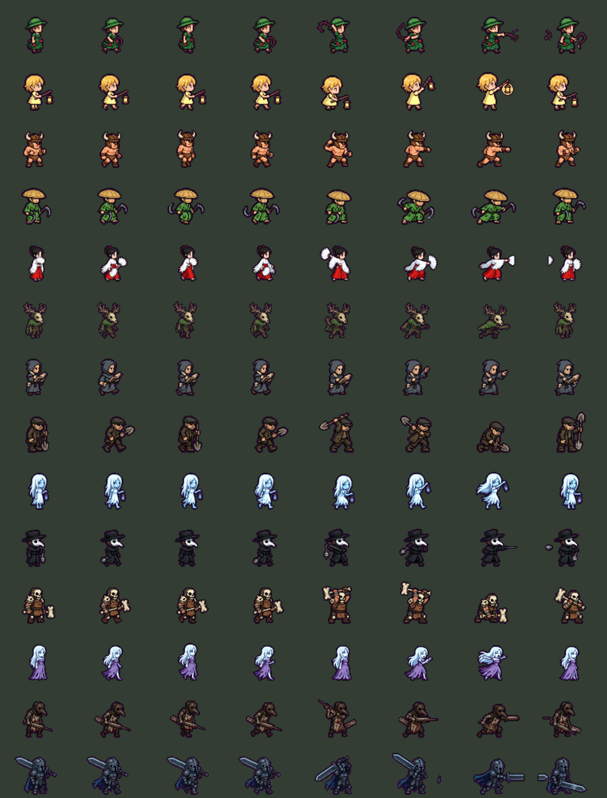
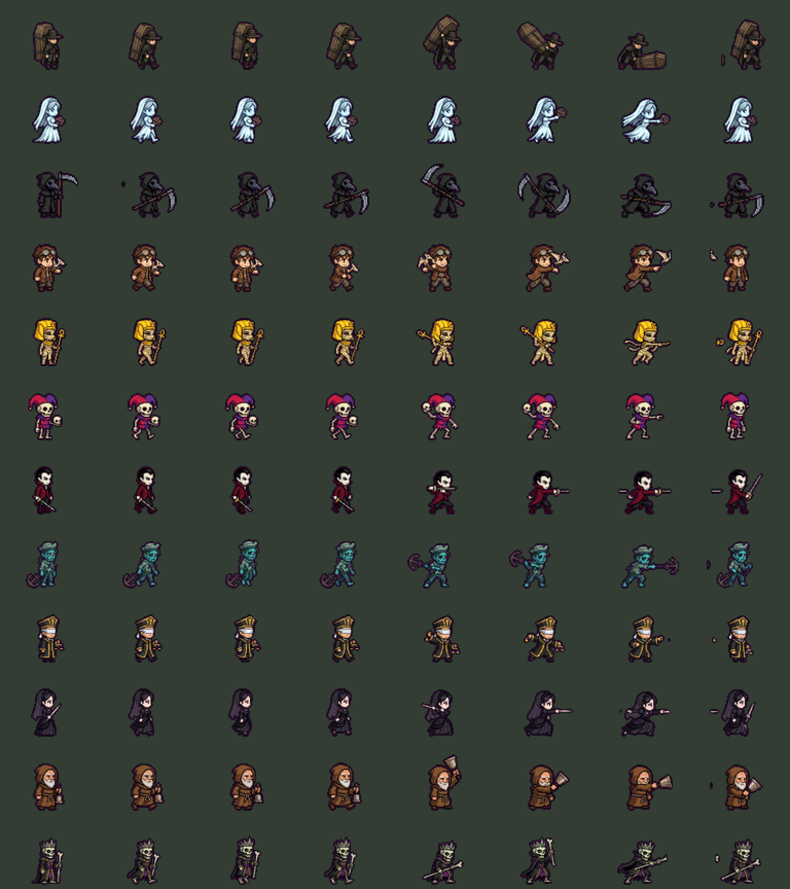
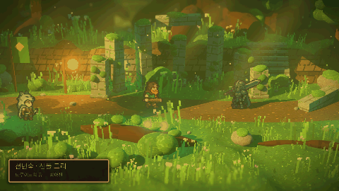

1. 본게임 전투 (움직이는 그림)
왼쪽은 드루이드 「천년숲」, 오른쪽은 네크로맨서 「재의 묘역」. 캐릭터들이 걷고 공격하는 동작 그림으로 움직입니다. 약 9MB라 잠깐 기다리면 재생됩니다.

같은 장면의 멈춘 화면(컴퓨터판 화질, 슬롯 포함).

2. 캐릭터 40명의 동작 그림
한 줄에 한 명: 서기, 걷기 3장, 공격 4장. 위에서부터 드루이드 1~20번, 네크로맨서 1~20번.



3. 무대 시험 장면 (움직이는 그림)
드루이드 「천년숲 · 선돌 고리」를 가까이서 본 시험 장면입니다.

게임 해 보기 (웹판) — 웹판은 가벼운 방식이라 앞뒤 흐림과 안개가 빠집니다.